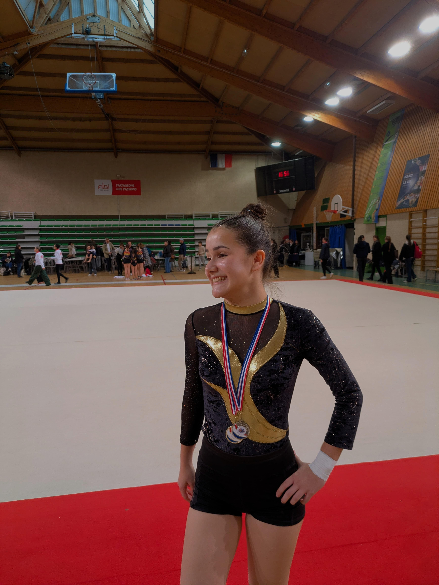

Bonjour et bienvenue sur mon portfolio.
Je m'appelle Flore ALBERT, j'ai 17 ans et je suis originaire d'Albi.
Je suis lycéenne à la cité scolaire Bellevue à Albi, en terminale.
En première, j’ai choisi les spécialités Mathématiques, NSI et Arts plastiques.
En terminale, j’ai poursuivi avec les spécialités Mathématiques et NSI.
Téléphone : 07.83.87.46.65
Email : flore.alb1864@gmail.com
Photo :
